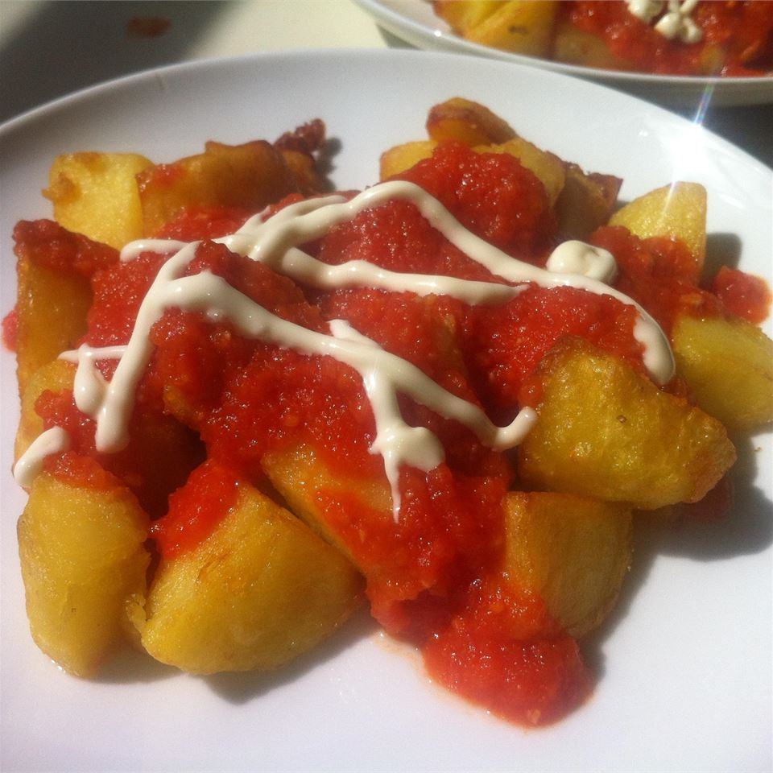

Return to main page
Patatas bravas

Spanish tapas are tasty small plates that when combined can create a light supper or serve as a great appetizer.
Patatas Bravas are tasty fried potato cubes served with a smoky, spicy dipping sauce.
Ingredient Checklist
- 2 russet potatoes, peeled and cut into 1-inch cubes
- 2 cups olive oil
- 1 tablespoon salt
- 3 tablespoons olive oil
- 1 onion, diced
- 1 teaspoon salt
- 1 clove garlic, finely chopped
- 1 red chile, minced
- ½ teaspoon smoked paprika
- 1 (14 ounce) can whole peeled tomatoes, drained
- ¼ cup mayonnaise
Recipe instructions
- Combine potatoes, 2 cups olive oil, and 3 teaspoons salt in a large cold skillet. Heat on low and cook until potatoes are softened, 12 to 15 minutes. Increase heat to high and fry until golden, 5 to 6 minutes. Drain on paper towels.
- Heat 3 tablespoons olive oil in a large saucepan over medium heat. Cook and stir onion with 1 teaspoon salt in the hot oil until onion has softened, 3 to 4 minutes. Add garlic, chile, and smoked paprika; simmer for 1 to 2 minutes. Stir in tomatoes and return to a simmer. Transfer tomato mixture to a blender, cover, and puree until tomato sauce is smooth.
- Serve patatas bravas with tomato puree and and mayonnaise for dipping.
Return to main page